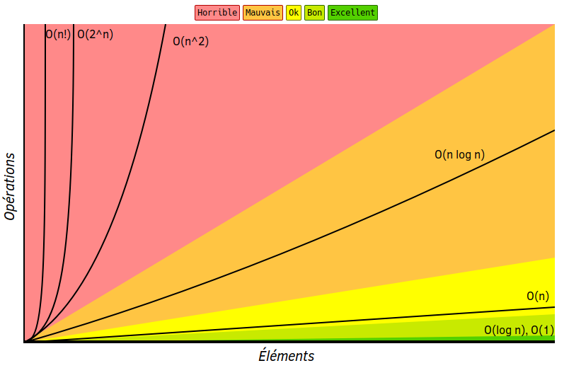
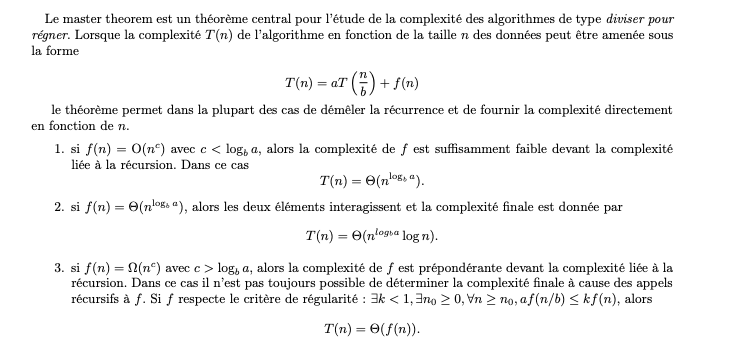

Chapitre 4 : Complexité — McCabe & Big O
Deux métriques pour évaluer la complexité du code : la complexité cyclomatique de McCabe (structure du flot de contrôle) et la notation Big O (croissance du temps/mémoire).
Note
Chapitre présenté en exposé : décrire la métrique, montrer les calculs, relier aux critères ISO/IEC 9126, puis discuter avantages/limites.
La complexité cyclomatique de McCabe
Développée par Thomas J. McCabe, elle indique la complexité structurelle d’un programme. Elle se calcule en comptant le nombre de chemins linéairement indépendants dans le graphe de flot de contrôle (formé par les boucles, conditions, branchements). Il existe deux approches :
Graphique |
Décision |
|
|---|---|---|
Avantage |
Donne le détail de la structure du code (CFG) |
Rapide |
Limite |
Laborieux |
Pas de vision globale de la structure |
Formule graphique
où \(M\) = complexité cyclomatique, \(E\) = nombre d’arêtes, \(N\) = nombre de nœuds, \(P\) = nombre de composantes connexes.
Note
Pour un seul programme (ou sous-programme / méthode), \(P = 1\).
Catégories de risque (McCabe)
Une complexité plus élevée = plus de difficultés de test et de maintenance. McCabe propose un maximum de 10 par fonction :
M |
Interprétation |
|---|---|
1 – 10 |
Procédure simple, peu de risque |
11 – 20 |
Plus complexe, risque modéré |
21 – 50 |
Complexe, risque élevé |
> 50 |
Code non testable, risque très élevé |
Approche par décisions (cheat sheet)
Ajouter +1 |
Ajouter +0 |
Commentaire |
|---|---|---|
|
|
|
|
|
|
|
|
|
chaque opérateur booléen ( |
Dans le McCabe original, tout le contenu du |
|
|
|
La complexité Big O
La notation Grand O décrit le temps d’exécution (ou l’usage mémoire) d’un algorithme : elle juge l’efficacité d’un code en mesurant la croissance relative du temps par rapport à la taille des données d’entrée, à grande échelle.
{kind=link}

Les classes de complexité usuelles.
{kind=link}

Croissance comparée : O(1), O(log n), O(n), O(n log n), O(n²), …
Lien avec ISO/IEC 9126
McCabe relève surtout de la maintenabilité (analyse, testabilité) ; Big O relève du rendement (rapidité, ressources).
Exercice
Soit l’algorithme MergeSort (tri fusion) en Python (fonctions merge et
mergeSort) :
Calculez la complexité de McCabe de chaque fonction, puis de l’ensemble (mode graphique). Analysez les résultats.
Calculez la complexité Big O de chaque fonction, puis de l’ensemble. Analysez les résultats.